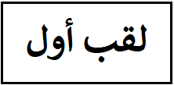

كتب لجميع مراحل الصفوف الابتدائية من الصف الاول حتى الصف السادس
كتب تفكير رياضي
كتب تطور التفكير الرياضي بشكل مذهل وتناسب جميع الطلاب في الابتدائي والاعدادي
كتب أكاديمية
كتب في الرياضيات في مجالات متعددة مثل الاحصاء وطرف البحث الكمي
فيديوهات يوتيوب

شرح بعض المواضيع في الاحصاء للقب الأول مثل المتغيرات, مقاييس المركز, مقاييس التشتت, تنظيم المعطيات, بناء العينات, الثبات والصدق, التوزيع الطبيعي, مربع كاي, رابط سبيرمان وبيرسون, اختبارات t و z.
شرح دروس إحصاء للقب الثاني فما فوق بما في ذلك تحليل التباين الأحادي, الإنحدار البسيط, الإنحدار المتعدد, الإختبارات البعدية, تحليل التباين الثنائي, تحليل التباين المتغاير, القياسات المتكررة.
شرح كيفية إستعمال برنامج spss ويشمل إختبارات سبيرمان وبيرسون والرابط الجزئي, الإحصاء الوصفي, تحويلات على المتغيرات, الإنحدار البسيط والمتعدد, عمليات في ملف المعطيات, تحليل التباين الأحادي, مربع كاي, إختبار t, الاتساق الداخلي ألفا كرونباخ, مقارنة المعدلات وجحم الأثر, إدخال المعطيات وتعريفها.
مقالات
Examining the relations between social anxiety and demographic factors
Demographic, Social-Emotional and Educational Aspects of Specific and Generalized Social Anxiety Subtypes Among Palestinian Arab Minority Student Teachers in Israel
Social anxiety subtypes among arab student teachers: demographic, social-Emotional and educational characteristics
Demographic, social-emotional and educational factors: personal resilience among beginning and specialized teachers from the Arab society in Israel
Motivation to learn among teaching students from the Arab society: demographic-personal factors and social-emotional factors